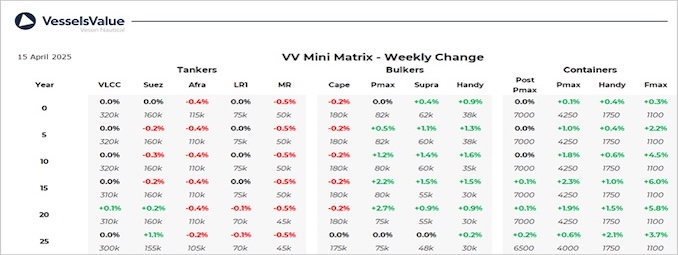

inWeekly Vessel Valuations Report15/04/2025

Bulkers:Bulker values have firmed overall this week mainly owing to recent deals, despite the observed decrease in earnings
Panamax BC Golden Keen (81,600 DWT, Apr 2012, Hyundai Mipo) sold to unknown Chinese buyers for USD 17.3 mil, VV Value USD 17.87 mil
Panamax BC Miyama (75,800 DWT, Jan 2005, Sanoyas) sold to unknown Greek buyers for USD 9.45 mil, VV Value USD 8.8 mil
Panamax BC Santa Maria (75,500 DWT, Aug 2008, Jiangsu Rongsheng) sold to undisclosed buyers for USD 10.5 mil, VV Value USD 9.85 mil
Supramax BC Emmanuel C (58,800 DWT, Mar 2008, Tsuneishi Zhoushan) sold to unknown Chinese buyers for USD 11.8 mil, VV Value USD 10.99 mil
Supramax BC Arietta (55,800 DWT, Jul 2009, IHI) sold to unknown Chinese for USD 13 mil, VV Value USD 13.68 mil
Tankers:Tanker values have remained stable across the board over the last week as uncertainty remains
VLCC Eurohope (306,500 DWT, Oct 2007, Daewoo) sold to Unknown Chinese buyers for USD 46.25 mil, VV Value USD 45.07 mil
Suezmax Simoon (151,200 DWT, Apr 2004, Samsung) sold to Unknown Chinese buyers for USD 26 mil, VV Value USD 25.92 mil
MR2 (Chemical/Product) Dai An (50,500 DWT, Feb 2007, SPP) sold to Unknown Vietnamese buyers for USD 14.75 mil (basis prompt delivery & DD Due), VV Value USD 16.65 mil
MR2 (Chemical/Product) PS Atene (50,000 DWT, Sep 2018, Hyundai Mipo) sold to undisclosed buyers for USD 37.8 mil, VV Value USD 38.01 mil
Containers:Midage and older vessels have firmed again this week, following some recent sales
Panamax Burgundy (3,426 TEU, Dec 2008, Fosen Norseewerke) sold to unknown Hong Kong buyers for USD 29.5 mil (Fwd Dely), VV Value USD 28.93 mil.
Sub Panamax Protostar N (2,741 TEU, Apr 2007, Wadan Yards MTW) sold to undisclosed buyers for USD 20.5 mil (inc. TC & DD Due), VV Value USD 20.08 mil.
Feedermax Nordic Hamburg (1,036 TEU, May 2010, Jiangdong) sold to Drevin Reederei for USD 13 mil (inc. TC & DD Due), VV Value USD 11.34 mil.
Feedermax Diana J (951 TEU, Mar 2006, Detlef Hegemann Rolandwerft) sold to undisclosed buyers for USD 9.7 mil (inc. TC), VV Value USD 8.51 mil.
